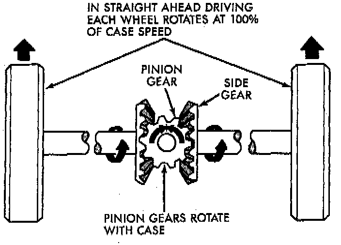
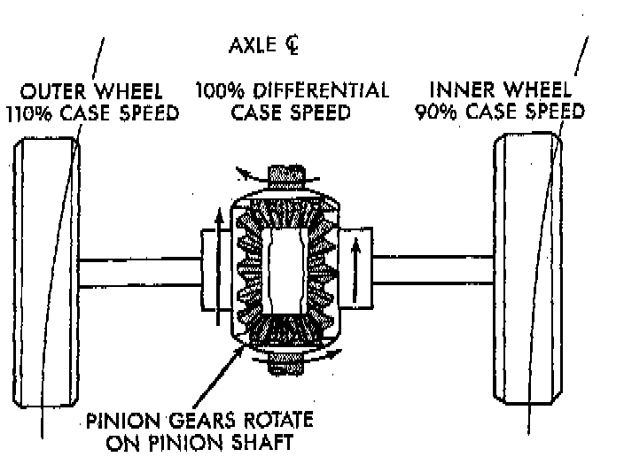
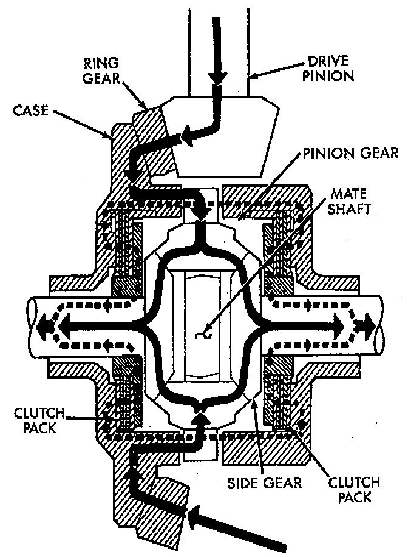

General Information
STANDARD DIFFERENTIALThe differential gear system divides the torque between the axle shafts. It allows the axle shafts to rotate at different speeds when turning corners.
Each differential side gear is splined to an axle shaft. The pinion gears are mounted on a pinion mate shaft and are free to rotate on the shaft. The pinion gear is fitted in a bore in the differential ease and is positioned at a right angle to the axle shafts.
In operation, power flow occurs as follows:
- The pinion gear rotates the ring gear
- The ring gear (bolted to the differential case) rotates the case
- The differential pinion gears (mounted on the pinion mate shaft in the case) rotate the side gears
- The side gears (splined to the axle shafts) rotate the shafts

During straight-ahead driving, the differential pinion gears do not rotate on the pinion mate shaft. This occurs because input torque applied to the gears is divided and distributed equally between the two side gears. As a result, the pinion gears revolve with the pinion mate shaft but do not rotate around it.

When turning corners, the outside wheel must travel a greater distance than the inside wheel to complete a turn. The difference must be compensated for to prevent the tires from scuffing and skidding through turns. To accomplish this,- the differential allows the axle shafts to turn at unequal speeds. In this instance, the input torque applied to the pinion gears is not divided equally. The pinion gears now rotate around the pinion mate shaft in opposite directions. This allows the side gear and axle shaft attached to the outside wheel to rotate at a faster speed.
TRAC-LOK OPERATION
In a conventional differential, if one wheel spins, the opposite wheel will generate only as much torque as the spinning wheel.
In the Trac-lok differential, part of the ring gear torque is transmitted through clutch packs which contain multiple discs. The clutches will have radial grooves on the plates, and concentric grooves on the discs or bonded fiber material that is smooth in appearance.

In operation, the Trac-lok clutches are engaged by two concurrent forces. The first being the preload force exerted through Belleville spring washers within the clutch packs. The second is the separating forces generated by the side gears as torque is applied through the ring gear.
The Trac-lok design provides the differential action needed for turning corners and for driving straight ahead during periods of unequal traction. When one wheel looses traction, the clutch packs transfer additional torque to the wheel having the most traction. Trac-lok differentials resist wheel spin on bumpy roads and provide more pulling power when one wheel looses traction. Pulling power is provided continuously until both wheels loose traction. If both wheels slip due to unequal traction, Trac-lok operation is normal. In extreme cases of differences of traction, the wheel with the least traction may spin.